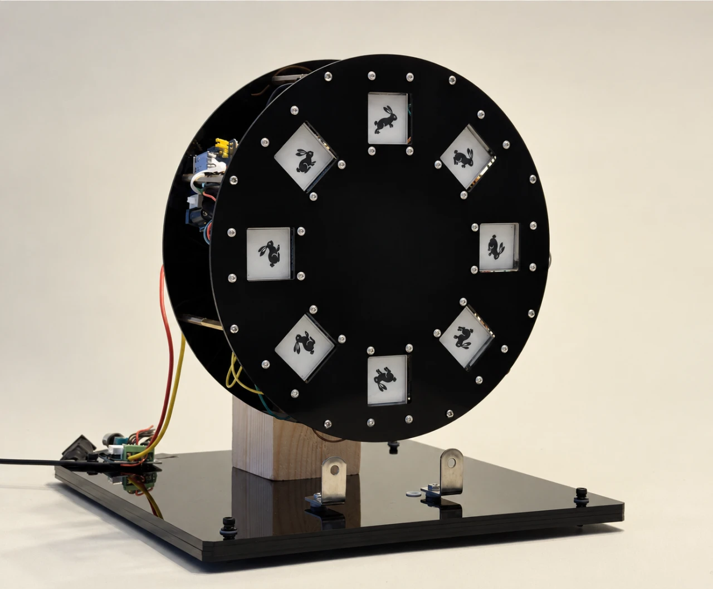
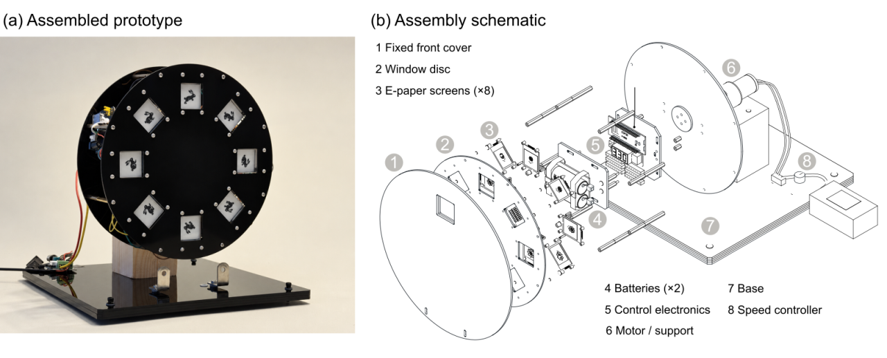
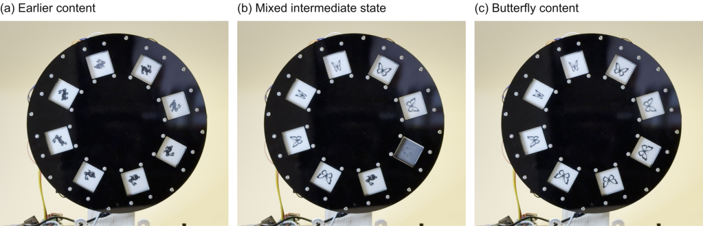
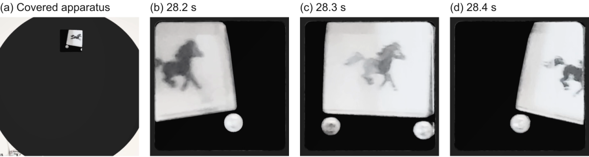

INT–δ: Phenakistiscope
A Small Window into Dreams
Tools & Technologies: AI-assisted image generation, Python, ESP32-S3, e-paper displays, Wi-Fi communication, mechanical fabrication
Introduction
A butterfly appears in a small window, disappears, and returns. Phenakistiscope gives an imagined fragment a physical place to linger. A sentence becomes eight monochrome images, held on eight e-paper screens around a rotating disc. As the disc turns behind a fixed cover, the images pass through the same opening—each pose briefly visible before another takes its place.
The project brings AI-assisted image making into a mechanical object. Its scene can be replaced without rebuilding the apparatus: a butterfly can become a flower, a rabbit, or a pony. A saved sequence can also return, allowing the same object to hold different moments of imagination.

Concept
The circular arrangement draws on the phenakistiscope, an early animation device that placed successive poses around a disc. Here, printed images become rewritable e-paper surfaces. Each pose occupies a separate physical position and retains its image without continuous power.
The work explores a rhythm of appearance, concealment, and return. Content and presentation can be changed independently. A different wing movement requires a new set of images; adjusting the motor changes how quickly the installed images pass the window. This separation lets the creator shape both the imagined action and the pace of encountering it.
System
Eight 1.54-inch e-paper panels, each with 152 × 152 monochrome pixels, are carried by the rotating assembly alongside an ESP32-S3 controller and battery supplies. The motor, speed control, and viewing cover remain fixed. Wi-Fi allows new content to be written without a computer cable attached to the disc.

Two preparation routes turn a text description into eight frames. In one, a language model proposes geometry and motion parameters that a shared renderer samples into poses. In the other, an image model produces an eight-cell sheet, which local processing splits, fits, and converts to black and white. Both routes produce a complete sequence for preview, storage, and installation.
The preview places all eight frames together so the creator can check subject consistency, pose variation, cell boundaries, and the return from the last frame to the first. Saving the converted frames preserves a specific candidate; generating the same description again can produce a different result.


Interaction
The working sequence is to stop the disc, select or prepare a scene, write and check its eight frames, and then start the motor. A saved scene can be restored through the same process. The speed control changes the passage of the installed images without changing their content.
Rewriting happens one screen at a time. For a short interval, the object holds old and new scenes together: a rabbit may remain on one panel while a butterfly has already appeared on another. These intermediate states make replacement visible as a physical process, rather than an instantaneous change of screen content.


Reflection
Building the prototype revealed that a successful transfer does not guarantee an expressive sequence. Poses can repeat, an intended movement can become too subtle, and artwork can cross the boundaries between cells. Previewing and retaining complete sets became central to the workflow.
The fixed window shows images moving into view and disappearing behind the cover. The current prototype explores this recurring encounter; continuous apparent motion has not been systematically assessed. Further work will examine viewing distance, lighting, rotation speed, and how people develop and revisit their own imagined fragments. Phenakistiscope remains an invitation to give a fleeting scene a place, a rhythm, and a return.